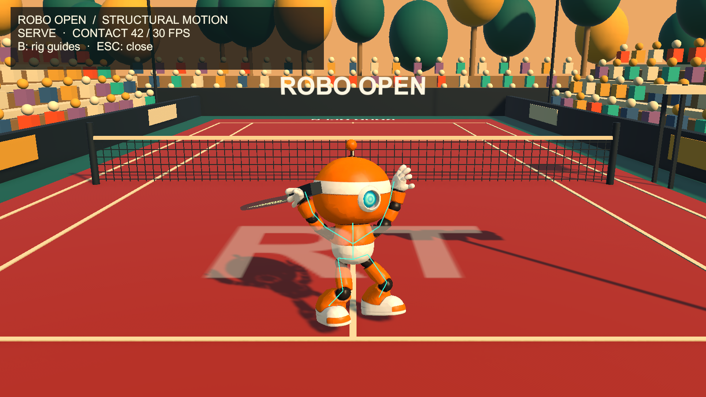
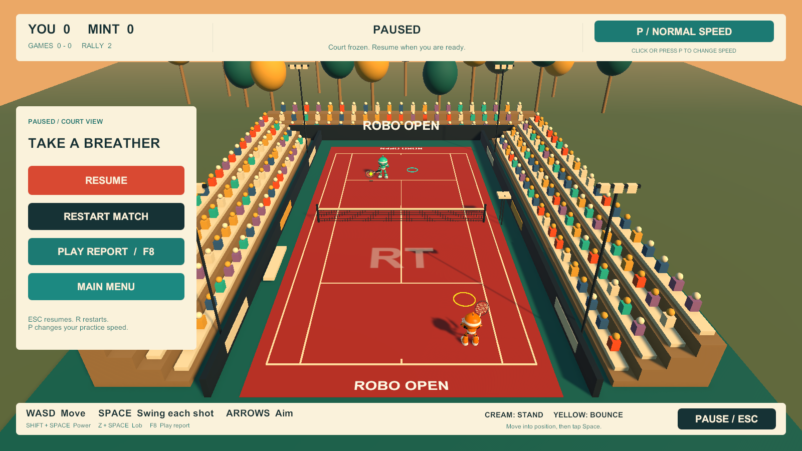

The second round: from moving robots to a game a human can learn.
Development date: 5 September 2026, local project date. Some machine receipts use the following UTC date.
Deliverable: Illustrated v1 journey · Two-tab journey reader · Original journey, preserved.
Version boundary: “v1” names this second-round narrative, as requested by the human. The implementation progressed through v0.2.0, v0.3.0, v0.4.0 and v0.4.1. It does not mean a v1.0 executable has been released. At the documentation check, GitHub’s latest Windows release remained v0.3.0; slow motion and the consolidated UI were working local builds.
Evidence boundary: This account combines the conversation, current source, saved motion reports, screenshots, test receipts and Git history. Earlier animation work is reconstructed from those durable records; later practice and UI changes were documented from the active conversation and fresh checks. It is not a verbatim transcript of every command. Original journey sections 9–10 already overlap the animation and diagnostics work; they remain untouched. This companion retells the whole enhancement arc so it can be read independently.
1. The brief — the human noticed what the first tests missed
The original inspiration remains Chong-U’s YouTube game-building video, especially the 12:00–15:00 rigging discussion. The creator’s project was unavailable. The reconstruction therefore retained its own generated robot, authored court and Unity game; it did not acquire the creator’s models or animation files.
The human’s new observation was that the robot players appeared not to be “rigged.” The supplied screenshot showed four structural demonstrations: forehand, backhand, smash and serve trophy. The human asked for more realistic, human-like motion and initially said, “do not run anything yet.” The later authorization settled an important control choice:
smash should happen automatically when i swing at a suitable high ball - no separate key
That instruction separates selecting a stroke from initiating a stroke. The game chooses an overhead smash when the incoming ball qualifies. The human still presses the ordinary swing control. Confusing those two meanings of “automatic” would later become central to understanding a missed return.
Inspection corrected the initial technical diagnosis: the robot already had 16 deform bones. The real shortcomings were weak coordinated movement, fragile skin weights and imperfect synchronization between racket motion and ball contact. Replacing the asset or purchasing another generation would not automatically solve those problems. The agent reused the existing robot and improved the chain that made it move.
The targeted reference review used the segment transcript and 36 sampled frames at five-second intervals. This was a structural review, not uninterrupted viewing of every frame. Around 12:45, the creator described giving joints a preferred bend; around 13:47–14:59, he discussed bad skin weights and tearing. His manual changes in his project must not be confused with the script-authored work in this reconstruction. Motion account and source boundary.
2. The starting point — reuse the expensive asset, change its behavior
The working environment already had Unity 6000.5.7f1, Blender 5.2.1, Python, FFmpeg, the GitHub CLI and a Windows prototype. The reusable inputs included the saved Meshy robot surface and textures, the Blender rigging script, a 16-bone skeleton, Unity scene-building code, court rules, a scripted Mint opponent and existing automated checks.
Meshy had generated the original visible surface. Blender supplied a way to turn that surface into an articulated character. Unity supplied the frame-by-frame game loop. Those are distinct responsibilities: a plausible mesh does not contain an executable tennis policy, and a skeleton does not contain convincing tennis technique.
The original ledger recorded 30 Meshy credits consumed for the successful generation and zero for a rejected rigging request. This second round reused those outputs and made no additional Meshy generation or rigging calls. The earlier remaining balance is a historical ledger value, not a freshly queried account balance. Agent subscription usage and local electricity costs were not measured. Spending receipt.
The agent worked inline; no subagents were spawned in this enhancement round. Python scripts, Blender’s background mode, Unity batch builds and synthetic input checks performed repeatable work. The human supplied direction and experiential evaluation rather than hand-editing models or code.
3. Four strokes — bones, skin, contact and recovery
A bent elbow is a constraint, not decoration
For a two-segment arm, a wrist target alone leaves an ambiguity: the elbow can bend in many directions around the shoulder-to-wrist line. A preferred bend plane resolves that ambiguity. The same issue applies to knees. Starting perfectly straight can make the bend direction unstable or visually wrong.
setup/tennis_motion.py describes wrists, ankles and elbow/knee bend references, then uses analytical two-bone inverse kinematics to calculate poses. “Inverse” means starting with the desired hand or foot location and solving backward for joint orientations. The authoring pass adds knee flexion, torso and shoulder rotation, planted support feet, off-hand positioning and recovery. Blender bakes those poses into animation curves that Unity can import.
The rig retained 16 deform bones and gained eight reference guides: two wrists, two ankles, two elbow poles and two knee poles. These guides are saved authoring references, not a finished interactive animator’s control rig with live draggable IK constraints. The editable motion specification is primarily the Python script. That distinction matters if a future artist expects to open the file and manipulate a production-ready control rig.
The four visible strokes, plus locomotion
| Stroke | Why it was needed | Authored movement | Contact marker at 30 fps |
|---|---|---|---|
| Forehand | The racket should prepare and travel through a plausible contact pose. | Shoulder/hip rotation, knee flexion, off-hand balance, contact, follow-through and recovery. | Frame 14 of 34 |
| Backhand | The opposite-side ball should not reuse an obviously wrong forehand pose. | Distinct across-body preparation, torso rotation, wrist target and recovery. | Frame 15 of 36 |
| Smash | High balls need an overhead action rather than a waist-height swing. | Overhead preparation, arm extension, a small jump and recovery. | Frame 25 of 46 |
| Serve / trophy | A serve should visibly develop before the ball launches. | Toss, bent-knee trophy preparation, overhead contact and follow-through. | Frame 42 of 66 |
Idle and run complete the six imported clips, with 60 and 24 authored frames respectively. The trophy is a preparation pose inside the serve sequence, not a fifth tennis stroke. The actual serve now takes 1.4 game seconds from initiation to contact, matching frame 42 at 30 fps. Authored frame receipt.
Actual captured animation / select a stroke
Three-second excerpts from the fixed-step Unity motion viewer. These show the authored stroke; gameplay blends anticipation and shorter contact scheduling.

Why stronger poses broke a seemingly acceptable mesh
The first expanded strokes exposed long spikes. Some low hand vertices had been classified as leg vertices by an earlier height-based rule. An extreme backhand edge stretched roughly 45 times its rest length. Simply widening a height threshold moved the classification failure instead of solving it.
The repaired assignment uses nearest anatomical bone segments, with head/foot safeguards, normalized joint smoothing and checks for hand-to-leg influence. The rigging script imports the saved surface, assigns weights, creates actions and exports the Unity asset. No human weight-painting session was required during this pass.
Another defect appeared at texture seams. A surface can contain duplicate vertices at the same position because each side needs different texture coordinates. Smoothing their bone weights independently caused the duplicates to separate when posed. Synchronizing weights for coincident positions closed those cracks at the tested contact poses.
A third failure came from coordinates: a root-bone local Z displacement was treated as world vertical. Transforming the intended world-up offset through the bone’s rest orientation corrected the crouch and jump direction. Overhead wrist targets also needed more clearance from the unusually large head; the targets moved outward while the racket shaft angled inward.
Lesson: a model can look sound at rest and fail only when the motion asks something difficult of it.
Make the racket and ball agree
Unity’s RobotActor.cs samples the imported movement and fits the racket arm toward a contact target. A short planting adjustment helps the body reach the planned pose. The outgoing ball starts at the racket head, subject to a bounded mismatch tolerance; it no longer simply reverses direction independently of the visible swing.
The v0.2 controller used approximately 0.10 seconds of final strike time for ordinary returns and 0.14 for overheads. It anticipated the ball before the input rather than forcing a late key press to wait through the entire authored backswing. The subsequent return-planner upgrade replaced that fixed forecast with a short search described below. The full animation viewer and the responsive gameplay controller therefore do not play every stroke with identical timing.
Automatic smash selection requires a reachable high ball, at least 1.92 game units high and descending or near its apex. It uses the existing swing button. A serve still has to bounce before it may be returned. Mint uses the same stroke machinery and periodically produces lobs, creating opportunities for overheads.
Seeing the bones is a diagnostic tool
A separate motion viewer shows the four strokes close up. B toggles joint guides; Escape closes it. A fixed-step capture path renders 360 frames at 30 fps, producing a 12-second sequence. FFmpeg encoded the full film and four individual clips for review. These are images from the game/animation pipeline, not fresh image-generation illustrations.
The viewer exposed a facing error: it showed the character’s back. A texture diagnostic located the cyan eye and checked which side of the actor’s forward axis it occupied. The right shoulder was also on the wrong side. Removing an obsolete 180-degree model rotation corrected both. Export was narrowed to the six deform-skeleton actions after helper guide actions appeared as unwanted extra clips. Facing measurement · Motion gallery.
4. The core problem — a successful automated rally was not a successful human game
After trying the animated build, the human reported being unable to return Mint’s ball and explicitly requested a report without a fix. The agent inspected the existing behavior first. The old point logs could establish losses and rally lengths, but could not explain whether the failure was positioning, timing, input delivery, forecasting or racket geometry.
The old return path had several gates: a fresh swing press, a roughly 0.27-second early buffer, own-side and height checks, a broad reach test, then a delayed racket-contact check. The visible readiness cue did not enforce every condition that the actual strike later enforced. An encouraging message could therefore be followed by a rejected strike.
The forecast also ignored an imminent bounce. For a ball at height 0.60, moving downward at 4 units/second, a straight ballistic forecast 0.10 seconds later gives approximately 0.151. That falls below the permitted 0.38 contact height. The real trajectory reaches the ground shortly afterward and rises again. Treating that one low forecast as a reason to consume the input could lose the later rising-ball return.
The agent’s earlier test player had an advantage the human did not: it could consult exact game state and swing as soon as the internal eligibility condition became true. Stationary ball fixtures also skipped much of the real approach problem. A long autonomous rally proved that a path through the implementation existed. It did not prove that the interface exposed that path clearly to a person.
The human then authorized better recording alongside the next return-system improvement, with a broader goal: explain underperformance of either player and support recommendations. This changed the work from simply making hits easier to making misses inspectable.
One planner for the cue, the player and Mint
ReturnPlanner.cs now drives the readiness message, human scheduling and Mint’s decision. It forecasts in 1/120-second steps, follows legal bounces, respects net/court rules and searches contact candidates approximately 0.08–0.28 seconds ahead. It previews the racket pose and bounded planting adjustment before advertising a strike.
The early buffer increased to 0.48 game seconds. A tap remains available until it schedules a strike, expires or is cleared by a point/match transition. Contact is checked through a small interval around the scheduled moment, roughly 0.0167 seconds before to 0.06 seconds after, rather than at one isolated sample.
The improvement retained boundaries: You have a broad 1.85-unit horizontal reach, Mint 1.58, ball height must be 0.38–2.75, and final racket assistance stays within 0.60. Preview acceptance reserves a further 0.08 margin. Own-side, first-serve-bounce and second-bounce rules still apply. These are arcade tuning values, not measurements of human biomechanics.
A cream ring suggests where to stand, yellow marks the first bounce, and teal indicates shot aim. After the bounce, tracking must continue because the ball keeps moving. “Tap Space for each shot” became explicit. This was an attempt to make the required action legible; later human feedback showed it was still insufficient.
5. A local flight recorder — evidence before advice
The new recorder is implemented in PlayDiagnostics.cs; PlayReport.cs turns its output into a standalone HTML report. F8 pauses active play and opens that report. A launcher can reopen the latest saved report after the game closes.
| File | What it preserves | Why it matters |
|---|---|---|
session.json |
Anonymous session identity, build, policy, launch mode and configuration. | Identifies which rules produced the evidence. |
events.jsonl |
Input presses/releases, movement changes, eligibility, buffer creation/expiry/consumption, scheduled and accepted/rejected contact, bounces, points, focus and pause events. | Reconstructs the sequence leading to an outcome. |
windows.jsonl |
Completed sampled windows around misses. | Preserves context instead of only the final failure. |
summary.json |
Both players’ totals, cause counts, latest 200 exchanges and eight recent replays. | Makes trends readable without parsing every event. |
report.html |
Recommendations, evidence table and interactive top-down trace. | Gives the human an accessible way to inspect the recording. |
Events carry game time and elapsed real time, ball position/velocity, both player/racket positions, movement and aim, stroke phase, predicted contact, buffer state, bounce/score state, focus and the actual HUD message. Context is sampled at about 10 Hz, retaining roughly three real seconds before a miss and up to one after it. A sampled court trace is neither a video nor a deterministic re-simulation of every frame.
Recommendations are transparent rules, not an external language model call. A tap that expires before the first available window suggests early timing. A held key without a new effective press suggests releasing between shots. A scheduled strike that fails contact points toward the game’s geometry, planting or forecast. Broad reach without any feasible racket pose is also a game-side investigation. No reachable window remains ambiguous between positioning and a difficult ball.
Mint is recorded too. A missed available window can reveal a CPU scheduling problem. Deliberately scripted random overhits are marked explicitly, so the report does not invent a learned skill deficit for a policy that was instructed to miss. Return completion, outgoing shot errors and points won/lost are separate measures. Interrupted exchanges and incoming balls ending as the opponent’s outgoing error are excluded from the return-completion denominator.
The public example play report contains synthetic validation data, not a raw human session. It demonstrates the interface without publishing personal play history.
Recording must not become the reason the game fails
Streams flush events as they are written. Summaries save at important boundaries, on report requests, periodically and on exit. A crash can still lose the unsaved rolling context or latest summary. A deliberately unusable output location verifies that recording failure produces a warning while gameplay continues.
Retention recognizes only recorder-owned session folders and files; it avoids directory links and unrelated data. It checks a 20-session / approximately 100 MiB budget at launch, with approximately 8 MiB caps on each event/window stream. The active session can temporarily grow beyond the launch-time aggregate budget. An incomplete recording is disclosed rather than silently treated as complete.
The code records gameplay actions, not raw typed text, account identity or an upload stream. Raw human session files stay local. A public documentation pass still needs a staged-file scan because logs, exports and binaries can contain information absent from the report itself. Detailed recorder contract.
6. A real miss — position, intent and input are different observations
The next human question was direct: “i moved to the yellow circle but still could not block mint’s return. why”. The agent read the latest completed exchanges and the actual input-event stream without changing gameplay.
| Exchange | Recorded facts | Supported interpretation |
|---|---|---|
| First incoming return | Movement was forward without the needed sideways correction. Closest horizontal distance was about 2.70, outside the 1.85 broad reach limit. No swing attempt was recorded. | There was no feasible hitting window from the recorded position. |
| Second incoming return | The planner offered about 0.60 game seconds of valid opportunity. Sampled HUD text read “SWING NOW · TAP SPACE.” No swing press or accepted click was recorded during the return. | Positioning was sufficient, but the game did not receive an instruction to swing. |
Both serve presses had been recognized. The game retained focus through the two misses; the recorded focus loss occurred afterward. Across the session, 76 events supplied a much better explanation than the old final-score log.
One apparent logging problem was a misleading directory listing: open JSONL files were reported with zero length. Reading the live stream with concurrent-writer sharing returned the events. Directory metadata was not enough to conclude that recording had failed.
The correct conclusion was narrow: the game recorded no return swing. It could not observe the human’s intention, tell whether they expected automatic blocking, or detect every possible OS-level input problem. The word “block,” the prominent yellow marker and the earlier automatic-smash language suggested a plausible mismatch in expectations. That interpretation was explained as a UI problem, not treated as proof of human error.
The agent clarified the controls: yellow is the bounce location, cream is the standing suggestion, and every return needs a fresh swing. It also acknowledged that “MOVE BEHIND THE YELLOW MARKER” could be confusing. No additional reach or timing change was made during that diagnosis.
Lesson: distinguish “no intent,” “no recorded input,” “rejected input” and “failed contact.” They are different failures requiring different interventions.
7. Slow motion — reduce time pressure without changing the shot rules
The human then asked for a slow-motion practice mode. The agent implemented P, plus a visible speed button, to cycle normal → half → quarter → normal. This changes Unity’s shared game time scale while keyboard/UI processing remains responsive. Ball flight, player movement, Mint, stroke playback, serve preparation and the early-swing buffer slow together.
The alternative of slowing only the ball would change the relationship between movement, anticipation and contact. Changing the shared clock instead preserves their intended relationship in game time. Numerical sampling can still differ with frame rate; this is a practical simulation design, not a proof of bit-identical trajectories at every speed.
Pause sets the simulation rate to zero. Resume restores the selected practice rate instead of blindly returning to normal. Restarting a match preserves the selection. The menu stays responsive; a fresh process starts at normal speed. Half and quarter speed do not automatically swing, change the reach limit or legalize a serve volley.
Explore game time versus real time
Same rules. More time to react.
Early swing buffer1.92 real seconds0.48 game seconds
Example hitting window2.40 real seconds0.60 game seconds, if otherwise unchanged
Quarter speed gives four times the real time for the same game-time interval.
An explanatory calculator, not the game itself. It does not guarantee a particular window for every shot or change the real game speed.
At half speed, a 0.48-game-second early buffer lasts about 0.96 real seconds. At quarter speed it lasts about 1.92 real seconds. Similarly, an otherwise identical 0.60-game-second opportunity would last about 1.20 or 2.40 real seconds. These conversions explain the benefit; they do not promise every future shot will offer that window.
Diagnostics gained practiceSpeed on frames, speed-change events, startSpeed and speedChanged on exchanges, and practiceUsed/currentSpeed in summaries. The report flags sessions that contain slower play and shows eligible-window durations in both game and real seconds. It does not yet split all aggregate performance statistics into separate speed cohorts; mixed totals must not be compared directly with normal-speed ability.
The replay buffer remains three real seconds. At quarter speed it therefore covers only about 0.75 game seconds before a miss. This is a newly visible tradeoff: slower play can make the existing replay horizon too short to show the whole approach. Full-flight capture or speed-aware history would be a separate recorder improvement.
The human’s response was evidence unavailable to the automated tests:
excellent. the slow down (at quad speed) helped a lot.
Here “quad speed” referred to the quarter-speed setting, giving roughly four times the reaction time. This is positive feedback from one human session, not a controlled before/after performance study. The older practice verification receipt says human assessment was pending because it was written before this feedback; this narrative adds the later observation without rewriting that historical receipt.
8. Seven cards to two bars — make the court the main interface
Slower play made the next problem easier to see. The human asked to move “TAKE A BREATHER” away from the center because it obscured the court. During that work, the brief expanded: there had been seven cards, and they were too distracting.
The first response moved pause, welcome and results into a compact left-side panel. That addressed central occlusion but did not by itself simplify the overall HUD. The human’s second correction led to a broader layout change rather than merely moving all seven cards elsewhere.
TennisHud.cs now constructs two persistent edge bars during play. The top bar combines score, game totals, rally count, shot guidance and practice speed. The bottom bar combines movement/swing/aim controls, secondary shortcuts, marker explanation and pause. Separate brand, rally, legend and shot-callout cards were removed as independent surfaces.
Welcome, pause and match-result panels appear only when needed in the left margin. Point announcements reuse the top guidance area; they do not open a center panel. The pause view keeps the scene visible and frozen. This is a layout redesign, not a camera crop or a change to shot physics. The existing 1600×900 reference layout scales as a group with the window; the verified captures use that reference size, not every possible display aspect ratio.
Actual Windows captures / inspect the change

The redesign also shortened the speed label, avoiding a long practice label competing with the shot cue. It retained familiar controls instead of introducing a new interaction scheme while the human was learning to return the ball.
Lesson: moving clutter away from the center is not the same as removing clutter. Consolidation required a second human design correction.
9. Tools, ownership and the actual autonomy boundary
| Participant or tool | Actual responsibility in this round | What it did not establish |
|---|---|---|
| Human | Identified weak motion, chose automatic smash, authorized execution, requested read-only diagnosis, set the logging goal, reported misses, requested slow motion, confirmed it helped, rejected center overlays and excessive cards, requested this preserved-history companion. | Did not manually code, model or paint weights during the documented pass. |
| Codex / GPT-6 Astra | Inspected evidence, wrote authoring/runtime/report/UI changes, launched builds, diagnosed failures, checked artifacts and documented uncertainty. | Did not independently certify fun or infer hidden human intentions. |
| Blender + Python | Repaired skinning, solved joint targets, baked six clips, exported assets, measured deformation and orientation. | Did not provide motion capture or a finished artist control rig. |
| Unity + C# | Imported animation, integrated contact and ball flight, implemented planning, scoring, input, local diagnostics, speed and UI, built Windows players. | Did not turn scripted Mint into a learning agent. |
| Meshy | Supplied the previously saved surface and textures that were reused. | No new generation or credits were consumed in this round. |
| FFmpeg | Encoded actual captured motion into reviewable clips. | Did not synthesize the robot’s technique. |
| Python / PowerShell | Ran batch tools, parsed evidence, managed local builds and captured structured receipts. | A successful shell command alone was never sufficient proof of a successful build. |
| Browser tooling | Checked motion media and HTML reports, replay controls and published pages. | A loaded page alone did not prove its media or controls worked. |
Git / gh |
Preserved implementation/publication history and verified remote releases and Pages. | A local executable did not automatically become a downloadable release. |
The human’s repeated “start the game” requests also mattered: they connected build completion to an actual opportunity to test. New local versions used separate build folders, and the launcher preferred the latest available version. This avoided overwriting a running executable and made version selection explicit.
No modeling approval was needed for each elbow adjustment after implementation was authorized. Conversely, the initial “do not run anything yet” and later “report, do not fix” instructions were real boundaries. Autonomy covered execution within the chosen task; it did not erase those boundaries.
10. Failures, near-misses and the repairs that worked
- Wrong weights became visible only under a stronger pose. Hand-to-leg influence generated spikes. Anatomical segment assignment replaced the brittle height partition. Contact-pose checks then measured zero remaining hand vertices with leg influence.
- Texture seams became skinning seams. Coincident vertices had unequal weights. Synchronizing their weights produced zero measured separation at the four checked contact poses.
- Local and world coordinates were confused. The jump/crouch offset used the wrong axis interpretation. Rest-orientation conversion repaired vertical motion.
- The robot faced backward. The close-up viewer and cyan-eye measurement revealed the stale 180-degree rotation. Removing it corrected both eye and shoulder-side measurements.
- Authoring guides leaked into the animation export. Export was restricted to six deform-skeleton actions instead of every helper action.
- A generated C# file contained a non-UTF-8 middle dot. The source was normalized to UTF-8 before successful compilation. The durable account preserves the symptom; it does not invent an unavailable exact compiler message.
- A readiness cue promised more than the strike path could deliver. The shared bounce-aware planner replaced the separate, weaker cue and the bounce-blind forecast.
- A live log reader conflicted with its writer on Windows. The validation reader switched to a
FileStreamallowingFileShare.ReadWrite. The writer remained active; the test no longer treated concurrent logging as corruption. - Recording needed a failure path. The intentional warning
ROBO_DIAGNOSTICS_UNAVAILABLE: gameplay continues; local recording could not be written.was exercised with an unusable output directory. That expected warning is different from an unhandled game exception. - A background UI test did not receive keyboard events. The first court-view run showed a misleading “pause” capture without the pause panel, then
NullReferenceException: Object reference not set to an instance of an objectinPrototypeInputChecks+<Click>d__7.MoveNext. The trace contained a match start but no synthetic keyboard actions. The test later tried to click an inactive Resume control. The harness now setsInputSettings.BackgroundBehavior.IgnoreFocusand enables keyboard/mouse devices only inside the explicit synthetic-test path. The normal human game’s focus behavior was not changed. The next run passed. This repairs test delivery; it does not prove hardware input reaches an unfocused game. - File metadata and missing screenshots could be premature evidence. An image read happened before the capture file existed; a live log’s listed size was misleading. Waiting for the artifact and reading the stream directly resolved those cases. Observe the artifact, not an assumption about when it should exist.
- Local timing evidence could become a misleading public claim. Practice and UI builds worked locally, while the latest downloadable release remained v0.3.0. Documentation explicitly distinguishes those states. Publication is a separate step, not an implied consequence of a successful build.
Routine command corrections also occurred: PowerShell does not expand Bash-style brace lists, and wildcard-looking paths passed directly to a tool may be treated literally. Explicit file paths and file discovery resolved those lookup errors. They affected inspection, not the game’s physics.
11. Verification — stronger evidence, with limits attached
| Stage | Checked evidence | What it supports |
|---|---|---|
| Animation / v0.2 | 17 rules checks; 26 standalone input/UI checks; six-clip import, facing and skin reports; captured motion. | Stroke selection, visible serve preparation, legal serve behavior, imported rig and exercised contact poses. |
| Return diagnostics / v0.3 | 30 rules/diagnostic checks; 39 standalone checks; timed moving-ball and bounce fixtures. | Shared planner, buffer behavior, recording, cause classification, retention and failure handling in the exercised scenarios. |
| Practice / v0.4 | 30 rules checks; 52 standalone checks; six recorded speed changes; successful returns at 0.5× and 0.25×. | Clock scaling, responsive controls, pause/restart retention, real-time window conversion and practice labeling. |
| Consolidated UI / v0.4.1 | 30 rules checks; 52 standalone checks; menu, serve, pause and result captures. | Existing gameplay controls still work and the inspected layouts keep center court clear. |
The v0.3 one-minute autonomous run produced 14 You returns, 16 Mint returns, an 18-shot best rally and two points. The recorder attributed Mint’s losses to explicitly scripted overhits. That run recorded zero smashes. Automatic smash behavior was exercised in a suitable high-ball fixture; the ordinary rally run did not establish its natural frequency.
Skin checks measured a maximum weight-sum error of approximately 4.28×10⁻⁸, zero hand-to-leg influence and zero coincident-seam separation at the four checked poses. But 99th-percentile edge stretch remained roughly 1.90–2.05×, with isolated maxima approximately 6.80–9.34×. Passing the targeted checks did not make the skin artist-finished or certify all frames and IK targets. Skin measurements.
The later builds succeeded with zero build errors and one warning. The known optional render-pipeline warning remained; it was not hidden behind a “perfect build” claim. Standalone receipts, screenshots and actual output files supplemented process completion.
The most important qualitative evidence is the human report that quarter speed helped. It closes one earlier uncertainty—whether slower play could make this prototype more usable for this player—but leaves comfort, normal-speed transfer, long-session balance and other players unmeasured.
Evidence folders: motion · diagnostics · practice · court view. The latter two are local-build receipts, not release-download receipts.
12. Unknown unknowns — what this round exposed, and how to address it
“Rigged” can describe several different levels of readiness
A skeleton, skin weights, animation clips, animator controls and runtime contact alignment are separate deliverables. This pass improved the first three and the game-time alignment, while retaining script-based authoring. For a future artist handoff, specify live IK controls and editable action organization explicitly instead of assuming that bone guides already provide them.
Better motion can make latent asset damage worse
Gentle idle motion hides bad weighting. Extreme contact poses stress hands, seams and oversized heads. The response was to add geometric checks and visual review. A future polish pass should inspect transitions and full swings, especially the remaining high-stretch regions, rather than declaring success from four snapshots.
Assistance is part of the simulation’s contract
The game fits the racket and permits bounded mismatch; it does not compute a fully physical racket-string collision with spin and impact response. That is an intentional arcade compromise. Diagnostics expose accepted contact error so future tuning can assess whether assistance feels fair. Greater realism would require a separate design and validation effort, not simply shrinking the tolerance.
Observability can make incorrect blame more persuasive
A polished report can sound authoritative even when its causal model is weak. Recording a missing press does not prove missing intent. Recording distance does not prove that a ball was reasonably reachable from the previous recovery position. The report uses cautious categories, labels game failures and retains event context. Counterfactual questions—“could a feasible recovery have reached this ball?”—remain future work.
Symmetric logging does not imply symmetric players
You and Mint use related contact checks but different reach and movement values. Mint also has scripted decisions and deliberate error injection. Their metrics therefore describe different policies. Difficulty changes should be versioned and evaluated separately from the human’s learning curve.
Slower play changes both performance and the meaning of the data
Speed-aware timestamps and warnings were added immediately. Full per-speed cohort reports, normal-speed transfer assessment and speed-aware replay horizons were not. A useful next evaluation would hold shot difficulty approximately constant and compare short sessions at each speed, without claiming that practice accuracy directly measures normal-speed skill.
UI occlusion is a gameplay defect, not merely styling
Pause is often when a person wants to inspect ball position, court geometry or a missed opportunity. A centered menu removed that evidence. Moving controls left and consolidating seven cards into two bars protects that task. The current captures establish the result at 1600×900; smaller windows and other aspect ratios still deserve deliberate review.
A test harness has its own failure modes
Input injection, focus, window lifecycle and concurrent file access can fail independently of the game logic. The repair scoped background input behavior to validation only, and screenshots were checked against events rather than trusted by filename. Future input investigations should continue separating device delivery, engine acceptance and game-side scheduling.
“Local,” “committed,” “published” and “released” are different states
Earlier v0.2 and v0.3 archives were packaged, privacy-scanned, extracted, tested and checked against remote release digests. The v0.4/v0.4.1 gameplay work was built and tested locally. Publishing this narrative does not silently create a Windows release containing those changes. The next release needs its own packaging, metadata scrub and extracted-archive verification.
Autonomy still needs a human definition of success
The human did not supply the joint mathematics, contact planner or log schema. They supplied the information the automated system could not derive from passing tests: the motion looked wrong, returning was difficult, quarter speed helped, the pause panel blocked the court, and seven cards were too many. The agent translated each observation into an implementation and a narrower testable claim. That loop is the actual autonomous-development story.
13. Where things stand — and what this document preserves
The latest local executable is v0.4.1, combining six coordinated clips, automatic smash selection, visible trophy serve, bounce-aware returns, local diagnostic reports, normal/half/quarter-speed practice and a two-bar HUD with side menus. The launcher chooses the newest available local build. The human has positively evaluated quarter-speed practice; longer human evaluation remains open.
The published Windows release verified while writing this account is v0.3.0. The motion gallery and synthetic play-report example remain useful demonstrations. No additional Meshy credits were spent for these enhancements. No memory registry was modified.
This companion adds a new HTML document, its Markdown source, a two-tab reader, current UI captures and verification references. The original DEVELOPMENT-JOURNEY.html remains byte-for-byte unchanged. Its pre-edit SHA-256 was ee0d9dc99b24ceac57ad6e01fbc5c14b5de34dc393928eab4475620206b3d5c9; the documentation check verifies that same value afterward.
The next choices are concrete: tune practice from further human sessions, improve replay coverage at slow speeds, separate performance statistics by speed, inspect remaining skin deformation, or package a new Windows release. None is represented here as already completed.
Reader verification note
Testing the Original tab exposed an existing scroll-highlighting error in the preserved page: its script passes a heading ID beginning with a digit directly to querySelector, producing SyntaxError: Failed to execute 'querySelector' on 'Document'. The original content and native anchor links remain readable, but the scripted progress/highlight behavior is not certified. The original file was deliberately left unchanged under the human's preservation instruction. A future correction would use getElementById or an escaped selector; it is outside this documentation-only preservation pass. The new companion uses native section anchors and does not reuse that selector logic.